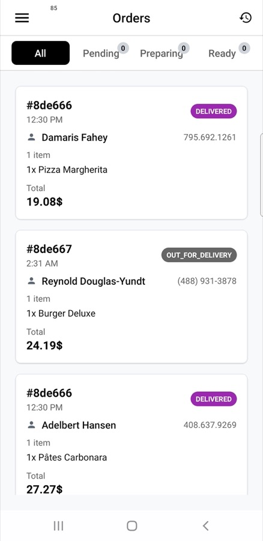
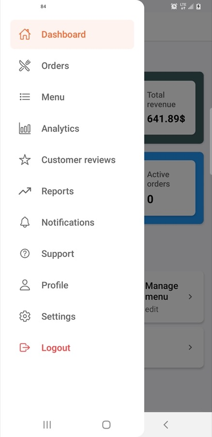

Kitchen Display (KDS)
Paper tickets get lost and shouted over. A kitchen display turns accepted orders into clear tickets the line can advance — so the pass stays calm when Friday night hits.
From “order accepted” to “ready for the driver”
Once the restaurant accepts an order, the kitchen needs tickets — not analytics. Staff see what to cook, what is in progress, and what is ready for pickup, then advance status with large controls (ideal on a tablet by the pass).
The same order still feeds admin earnings and the driver app. KDS is the kitchen face of the live order.

Kitchen Display — tickets for the line
Why kitchens adopt it quickly
Less chaos: one board instead of hunting slips. Clear handoff: when a ticket is ready, couriers know what to expect. Demo-ready: seeded tickets help you show a busy pass on day one.

Orders list — accept, then send to the kitchen board
Where it lives for partners
Kitchen Display sits in the restaurant app navigation next to orders, menu, subscriptions, and sponsored listings — one app for the business, KDS for the stainless steel counter.

Drawer — open Kitchen Display from the partner app
Pair with Logistics & POD for the full kitchen-to-door story.